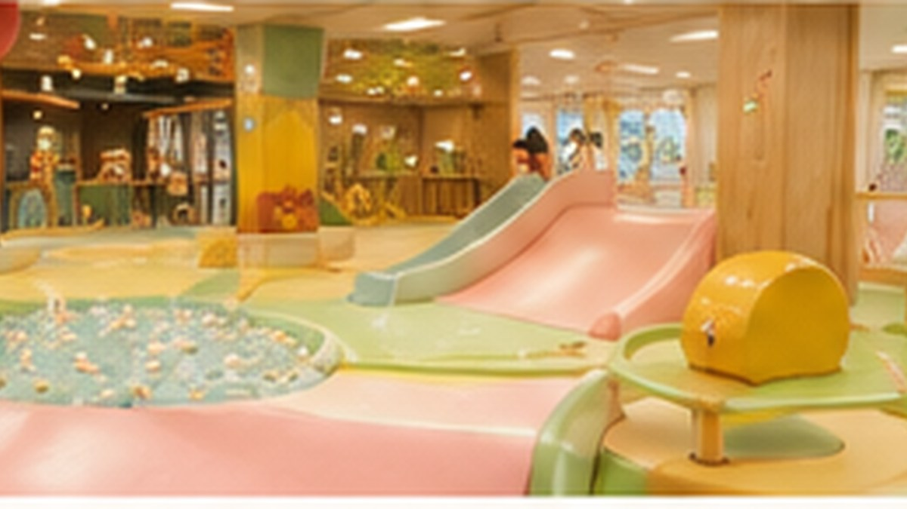
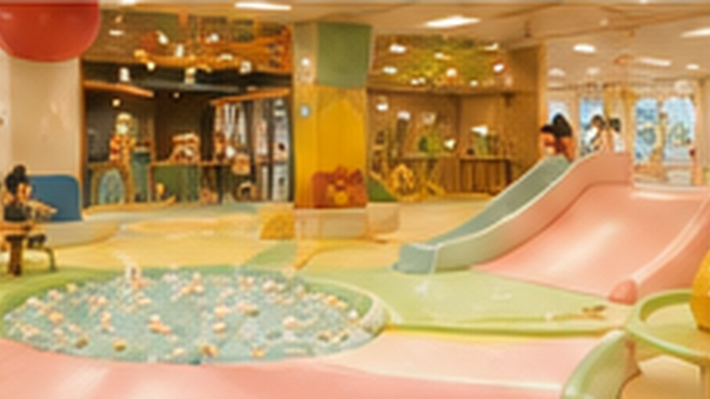

「子連れOK」より一歩先へ。遊ぶ場所、休む場所、食べる場所が近い店を中心に、親の余白まで含めて選びます。
赤ちゃんとの外食は、「入れるか」より「どう過ごせるか」。
床に下ろせる小上がり・座敷・靴を脱ぐ席を確認。
遊べるベビースペースやキッズスペースがあると親にも余白。
食事を続けやすい授乳室、おむつ替え、離乳食も合わせて見る。
横浜で、食事と遊びを一か所に
横浜駅・新横浜・あざみ野に、目的地として選びやすい店を追加しました。

Aloha Food Factory
新横浜駅直結。ファミリー向けソファ席のそばに、小さい子が遊べるキッズスペースがあるハワイアン。
この場所を見る →鎌倉海岸テーブル
横浜駅直結の百貨店内で、キッズスペースや離乳食と食事を組み合わせやすいベビーウェルカムなダイニング。
この場所を見る →
100本のスプーン あざみ野ガーデンズ
「コドモの社交場」、無料離乳食、授乳室まで揃い、親子の食事そのものを予定にしやすい。
この場所を見る →
べるべるパーク横浜関内店
遊ぶ・体験する・食べるを一か所にまとめやすい全天候型の親子拠点。
この場所を見る →東京で、親にも余白ができる店
遊ぶ場所だけでなく、食事や休憩まで同じ場所で完結しやすい候補。
100本のスプーン TOYOSU
小上がり、キッズスペース、離乳食を組み合わせやすく、豊洲の一日を締めやすい。
この場所を見る →100本のスプーン TACHIKAWA
小上がりと親子設備があり、GREEN SPRINGSやPLAY! PARKのあとにも。
この場所を見る →畳cafe&BAR くまさん家
畳、遊具、授乳・おむつ替えを近い距離で使える親子カフェ。
この場所を見る →
CULAFUL（キュラフル）
自然をテーマにした屋内キッズパークとカフェ。子どもが動き、親も座りやすい。
この場所を見る →PLAY! PARK ERIC CARLE
絵本世界をテーマにアートや体遊びを楽しめる屋内キッズパーク。0歳から使いやすい。
この場所を見る →べるべるパーク新宿本店
大型遊具や体験とカフェスペースを同じ場所で使いやすい雨の日の親子拠点。
この場所を見る →KIBUN NOTE
同じ「子連れOK」でも、助かる設備は違う。
Kibunでは小上がり、靴を脱ぐ席、ねんね・ハイハイ、ベビースペース、キッズスペース、授乳室、おむつ替え、離乳食などを別々の属性として表示します。月齢とその日の気分から選べるよう、候補を増やしていきます。
席・設備・利用条件は変更されることがあります。予約時または来店前に公式情報をご確認ください。
MOOD → PLACE
まだ決めきれないなら、気分から。
同行者・気分・使える時間から、今日の過ごし方を探せます。
今日の気分から探す →